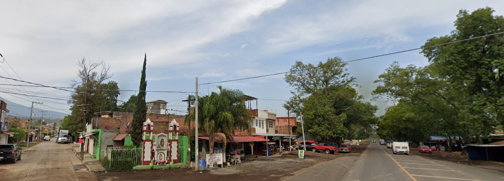

Los Nogales

Los Nogales es la primer comunidad que van a encontrar dirección Zamora a Morelia, donde encontrarán algunos lugares para comer a bordo de carretera.
Los Nogales es la primer comunidad que van a encontrar dirección Zamora a Morelia, donde encontrarán algunos lugares para comer a bordo de carretera.
Chilchota es la cabecera municipal, la localidad más grande del municipio y con mayor densidad de población. Tiene un ojo de agua natural muy conocida así como una gran cantidad de escalones que suben hasta un pequeño nicho donde se encuentra una virgen.
Esta es una comunidad pequeña, pero amable y muy tranquila.